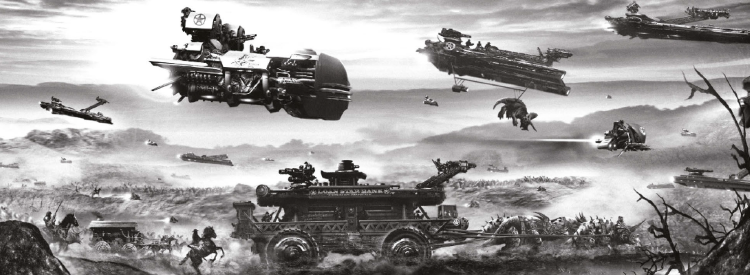

Cowboys from the future harvest dinosaurs from the past: what could possibly go wrong?
As part of the wider Millsverse, dinosaurs (or their progeny or clones) from this series crop up in Judge Dredd, The A.B.C. Warriors and Nemesis the Warlock. Specifically, Old One Eye from the first Flesh story begat Satanus, who was cloned in the future and became part of Judge Dredd's adventure across The Cursed Earth. Satanus begat Golgotha, who featured in the first series of The A.B.C. Warriors
Art by Clint Langley
| Story Title | Parts | Pages | w indicates a wraparound coverCovers | Year(s) | Issues | Writer | Artist | Colourist | Letterer |
|---|---|---|---|---|---|---|---|---|---|
| [Book 1] | 19 | 86 | 8: Boix 14: Barry Mitchell 17: Brian Bolland 3 | 1977 | Reprints: 2KA'82 (partial: ep. 1‑3) 2KA'84 (partial: ep. 4‑7) SFS7 (partial: ep. 10‑12) 2KA'89 (partial: ep. 11‑18) M4.04‑M4.07 1-19 | Pat Mills: 1,18,19 Ken Armstrong: 2‑4, 8 Studio Giolitti: 5,9,10,13 Kelvin Gosnell: 6,7,11,12,14‑17 various | Boix: 1‑2, 8‑10, 14 Ramon Sola: 3‑7, 10‑12, 15‑16, 19 Felix Carrion: 13, 17‑18various | [b&w] | Bill Nuttall: 1‑5, 16 Jack Potter: 6‑8, 12, 19 S. Richardson: 9 John Aldrich: 10, 14 Peter Knight: 11‑12 J. Swain: 13 Bennsberg: 15 Tony Jacob: 17 Tom Frame: 18 various |
No supertitle.The Buffalo Hunt | 1 | 6 | 0 | 1977 | 2KA'78 | unknown | unknown | [b&w] | unknown |
| Book 2 | 14 | 78 | 87: Massimo Belardinelli 93: Massimo Belardinelli 2 | 1978-1979 | Reprints: X786-99 | Geoffrey Miller | Massimo Belardinelli: 1‑12 Carlos Pino: 13‑14 various | <-- 20pp, [b&w] | Jack Potter: 1, 4, 6 Tom Frame: 2‑3, 5, 7‑8, 11 Peter Knight: 9, 12, 14 Chris Martin: 10 Steve Potter: 13 various |
| The Legend of Shamana [Book One] | 9 | 54 | 801: Carl Critchlow 808: Carl Critchlow 2 | 1992 | Reprints: M310 (supplement)800-808 | Pat Mills Tony Skinnervarious | Carl Critchlow | <-- | Steve Potter |
| The Legend of Shamana [Book Two] | 9 | 54 | 819: Carl Critchlow 1 | 1993 | Reprints: M311 (supplement)817-825 | Pat Mills Tony Skinnervarious | Carl Critchlow | <-- | Steve Potter |
| Chronocide | 7 | 42 | 973: Steve White 977: Steve White 2 | 1996 | Reprints: M312 (supplement)973-979 | Dan Abnett Steve Whitevarious | Gary Erskine | Simon Jacob | Annie Parkhouse |
Reimagining.Flesh 3000AD | 1 | 2 | 0 | 1997 | Reprints: M312 (supplement)1034-S | David Bishop Steve MacManusvarious | Carl Critchlow | <-- | Tom Frame |
| Hand of Glory | 1 | 10 | 0 | 2007 | 1526 | Pat Mills | Ramon Sola | Rufus Dayglo (GT) | Simon Bowland |
| Texas | 10 | 62 | 1724 [w]: Liam McCormack‑Sharp 1729: James McKay 1,1w | 2011 | 1724-1733 | Pat Mills | James Mackay | [b&w] | Ellie de Ville |
| Midnight Cowboys | 12 | 73 | 1774 [w]: Mark Harrison 1779: James McKay 1784: Peter Doherty 2,1w | 2012 | 1774-1785 | Pat Mills | James Mackay | [b&w] | Ellie de Ville |
| Badlanders | 12 | 72 | 1853: David Kendall 1856: Carl Critchlow 1858: Clint Langley 1861: Henry Flint 4 | 2013 | 1850-1861 | Pat Mills | James McKay Lee Townsend various | [b&w] | Annie Parkhouse |
| Gorehead | 10 | 62 | 2001: Clint Langley 2005: Clint Langley 2010: Clint Langley 3 | 2016 | 2001-2010 | Pat Mills | Clint Langley | [greyscale] | Ellie de Ville |
| >> Features << | |||||||||
Subtitled: "2000AD Future Advert".Flesh … It's the Real Thing! | 1 | 1 | 0 | 1977 | 4 | unknown | Kevin O'Neill | <-- | unknown |
Rules page [b&w].Flesh: [The Card Game] | 5 | 6 | 1 | 1977 | 7-11 | unknown | various / unknown | <-- 5pp, [b&w] | n/a |
| Flesh File | 3 | 12 | 0 | 1979 | 96-98 | editorial | Massimo Belardinelli | <-- 6pp, [b&w] | n/a |
| The (Dino)Saurus: A Handbook | 1 | 6 | 0 | 1988 | Reprints: M4.04 (partial)2KA'89 | editorial | Massimo Belardinelli | [b&w] | n/a |
| The Trans-Time File | 1 | 4 | 0 | 1988 | Reprints: M4.042KA'89 | editorial | n/a | [b&w] | n/a |
Version of prog 3 cover art.The Unpublished Flesh Artwork | 1 | 1 | 0 | 1988 | 2KA'89 | editorial | Ramon Sola | [b&w] | n/a |
From New ComicsFlesh: All Hail the New Flesh | 1 | 4 | 0 | 2011 | M309 | Matthew Badham | promo graphics | <-- | n/a |
| >> Posters / Teasers << | |||||||||
| The Legend of Shamana | 1 | 1 | 0 | 1992 | 797 | editorial | Carl Critchlow | <-- | n/a |
| Texas | 1 | 1 | 0 | 2010 | p2011 | n/a | James Mackay | <-- | n/a |
| >> Floating Covers << | |||||||||
| "Flesh From the Captain's Table!" | ~ | ~ | 1w | 2005 | X7 | n/a | D'Israeli | <-- | n/a |
| year | episodes | pages |
| 1977 | 20 | 92 |
| 1978 | 8 | 47 |
| 1979 | 6 | 31 |
| 1980 | 0 | 0 |
| 1981 | 0 | 0 |
| 1982 | 0 | 0 |
| 1983 | 0 | 0 |
| 1984 | 0 | 0 |
| 1985 | 0 | 0 |
| 1986 | 0 | 0 |
| 1987 | 0 | 0 |
| 1988 | 0 | 0 |
| 1989 | 0 | 0 |
| 1990 | 0 | 0 |
| 1991 | 0 | 0 |
| 1992 | 9 | 54 |
| 1993 | 9 | 54 |
| 1994 | 0 | 0 |
| 1995 | 0 | 0 |
| 1996 | 7 | 42 |
| 1997 | 1 | 2 |
| 1998 | 0 | 0 |
| 1999 | 0 | 0 |
| 2000 | 0 | 0 |
| 2001 | 0 | 0 |
| 2002 | 0 | 0 |
| 2003 | 0 | 0 |
| 2004 | 0 | 0 |
| 2005 | 0 | 0 |
| 2006 | 0 | 0 |
| 2007 | 1 | 10 |
| 2008 | 0 | 0 |
| 2009 | 0 | 0 |
| 2010 | 0 | 0 |
| 2011 | 10 | 62 |
| 2012 | 12 | 73 |
| 2013 | 12 | 72 |
| 2014 | 0 | 0 |
| 2015 | 0 | 0 |
| 2016 | 10 | 62 |
| 2017 | 0 | 0 |
| 2018 | 0 | 0 |
Comic strip data (excludes other content):